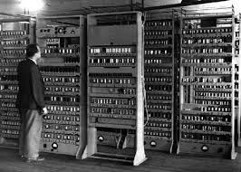
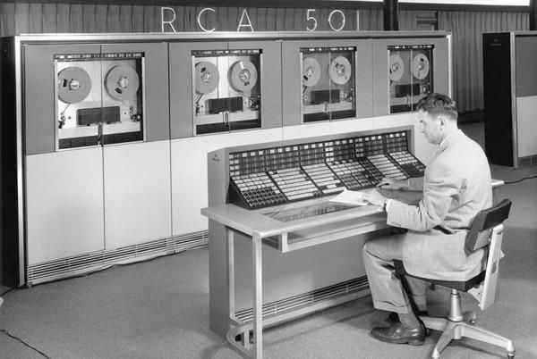
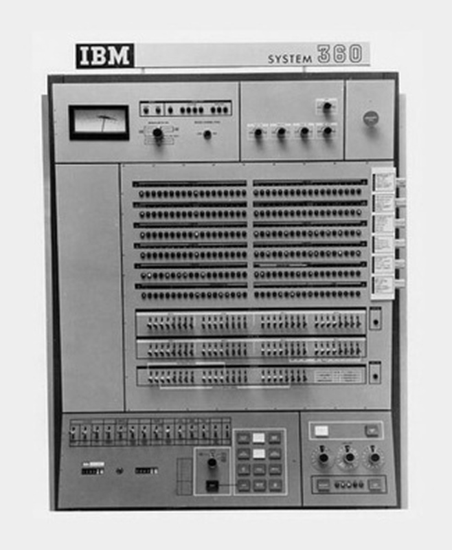
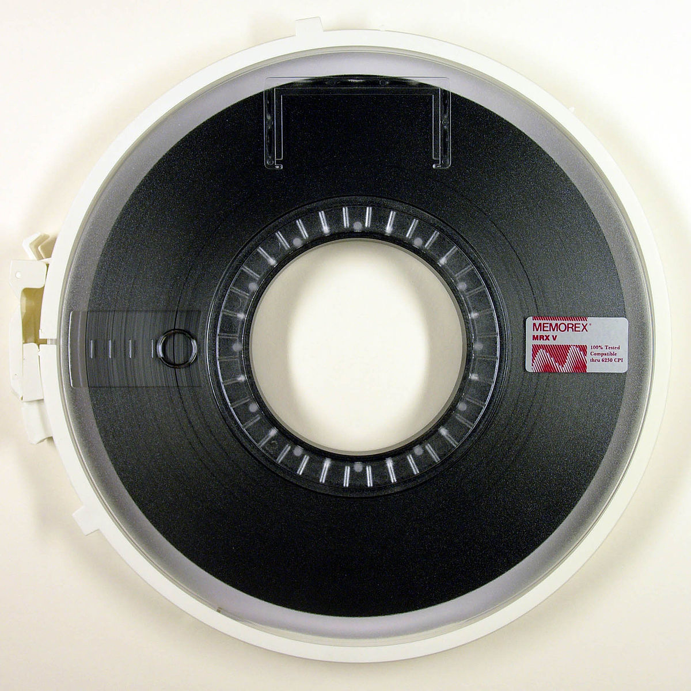
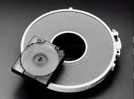
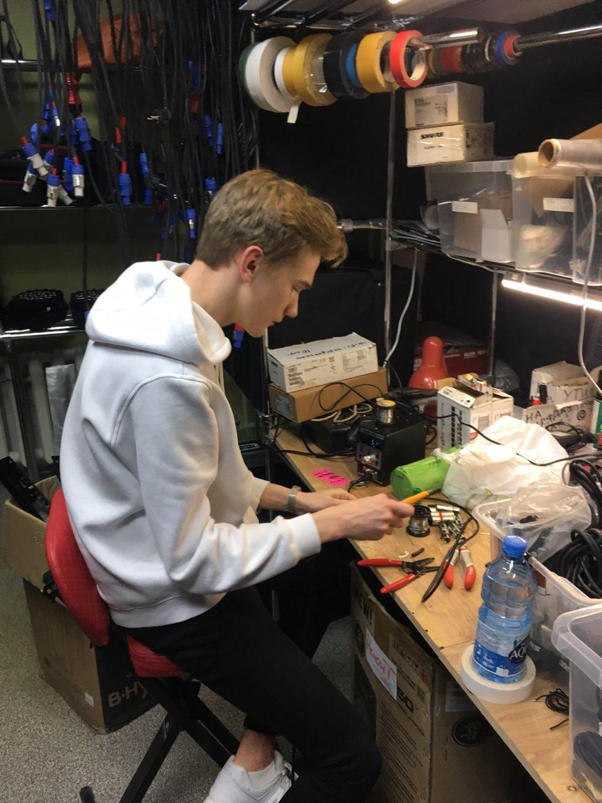

ЭВМ (электронно-вычислительная машина) (или компьютер) — это аппаратно-программное вычислительное устройство, реализованное на электронных компонентах и выполняющее заданные программой действия. Термин ЭВМ сегодня практически не применяется, кроме как в историческом смысле. Источник
Еще в V в. до н. э. греки и египтяне использовали абак, устройство похожее на русские счеты. Счетное устройство Паскалине В 1642 г. французский математик и физик Блез Паскаль (1623 - 1662) изобрел механическое устройство, позволяющее складывать числа. Это устройство позволяло суммировать десятичные числа. Внешне оно представляло собой ящик с многочисленными шестеренками. Основой суммирующей машины стал счетчик-регистратор, или счетная шестерня. Она имела десять выступов, на каждом из которых были нанесены цифры. Для передачи десятков на шестерне располагался один удлиненный зуб, зацеплявший и поворачивающий промежуточную шестерню, которая передавала вращение шестерне десятков. Дополнительная шестерня была необходима для того, чтобы обе счетные шестерни - единиц и десятков - вращались в одном направлении. Счетная машина Лейбница В 1673 г. немецкий математик, физик и философ Готфрид Лейбниц (1646 - 1716) изобрел счетную машину, позволяющую выполнять все 4 арифметических действия: сложение, вычитание, умножение, деление. Машина явилась прототипом арифмометра, использовавшегося с 1820 г. до 60-х годов XX века. Однако истинным предком современного компьютера следует, пожалуй, считать такое вычислительное устройство, которое само может переходить к следующей операции после выполнения предыдущей, т. е. способно выполнять последовательность операций.Разностная машина Бэббиджа В 1822 г. английский математик Чарлз Бэббидж (1792-1871) создал работающую модель, способную производить вычисления и печатать цифровые таблицы. Эта машина работала на паровом двигателе и была названа им "Аналитической". В ней была предусмотрена память для хранения чисел. Арифметические операции выполнялись в соответствии с программой, записанной на жаккардовых перфокартах (как в ткацком станке Жаккарда узор ткани задавался с помощью дырочек в картонных картах - перфокартах). С машиной Бэббиджа связано появление профессии программиста. Первым программистом мира стала дочь поэта Дж. Байрона Ада Лавлейс, которая разрабатывала первые программы для машины Бэббиджа, заложила многие идеи и ввела ряд понятий и терминов, сохранившихся до нашего времени. Появление настоящих компьютеров стало возможным благодаря развитию электротехники и электроники. В конце 30-х годов XX в. американцы Джон Атанасов (болгарин по происхождению) и Клиффорд Берри построили ЭВМ на вакуумных лампах, включавшую в себя электронную память и электронное устройство сложения и вычитания. В 1942 г. американский физик Джон Моучли представил собственный проект вычислительной машины. В 1946 г. американцами Дж. Моучли и Дж. Эккертом была построена вычислительная машина ENIAС (электронный числовой интегратор и калькулятор) на вакуумных лампах, занимавшая площадь в 300 кв. метров.
В истории развития ЭВМ принято выделять несколько поколений, каждое из которых имеет свои отличительные признаки и уникальные характеристики. Главное отличие машин разных поколений состоит в элементной базе, а также логической архитектуре и программном обеспечении, кроме того, они различаются по быстродействию, оперативной памяти, способам ввода и вывода информации и т. д.
| Поколения ЭВМ | I | II | III | IV |
|---|---|---|---|---|
| Годы применения | 1946-1958 | 1959-1963 | 1959-1963 | 1977—... |
| Элементная база | Эл. лампа, реле | Транзистор, параметрон | ИС, БИС | СБИС |
| Количество ЭВМ в мире (шт.) | Десятки | Тысячи | Десятки тысяч | Миллионы |
| Быстродействие (операций в секунду) | До 105 | До 106 | До 107 | Более 105 |
| Объем оперативной памяти | До 64 Кб | До 512 Кб | До 16 Мб | Более 16 Мб |
| Характерные типы ЭВМ, поколения | - | Малые, средние, большие, специальные | Большие, средние, мини- и микроЭВМ | СуперЭВМ, ПК, специальные, общие, сети ЭВМ |
| Типичные модели поколения | EDSAC, ENIAC, UNIVAC, БЭCM  | RCA-501, IBM 7090, БЭСМ-6  | IBM /360, PDP , VAX , ЕС ЭВМ, СМ ЭВМ  | IBM/360.SX-2, IBM PC/XT/AT, PS/2, Cray |
| Носитель информации | Перфокарта, перфолента |
Магнитная лента  | Диск  | Гибкий, жесткий, лазерный диск, др. |
| Характерное программное обеспечение | Коды, автокоды, ассемблеры | Языки программирования, АСУ, АСУТП | ППП, СУБД, САПР, ЯПВУ | БЗ, ЭС, системы параллельного программирования, др. |
| Исходник | ЧБ | Инвертрованный | Контраст | Размытие |
|---|---|---|---|---|
|  |